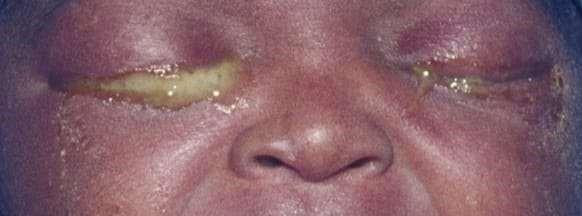

Conjunctiva · Bacterial conjunctivitis
Ophthalmia Neonatorum
Definition: Any form of acute conjunctivitis occurs in the 1st month after delivery.
Transmission of infection
- From maternal passage during labor or contaminated towels after birth.
Etiology
- Infectious:
- Gonococci 50% - Chlamydia trachomitis
- Others as staph, strept, B. coli. Pneumo, mixed. - Herpes simplex.
- Non-infectious: Chemical conjunctivitis (irritation by drops or ointment)
